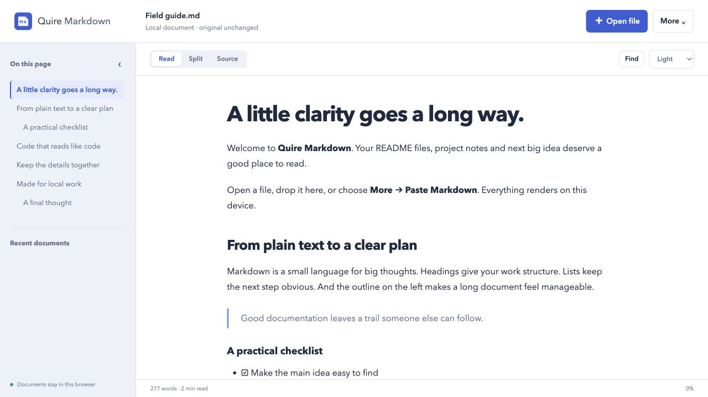
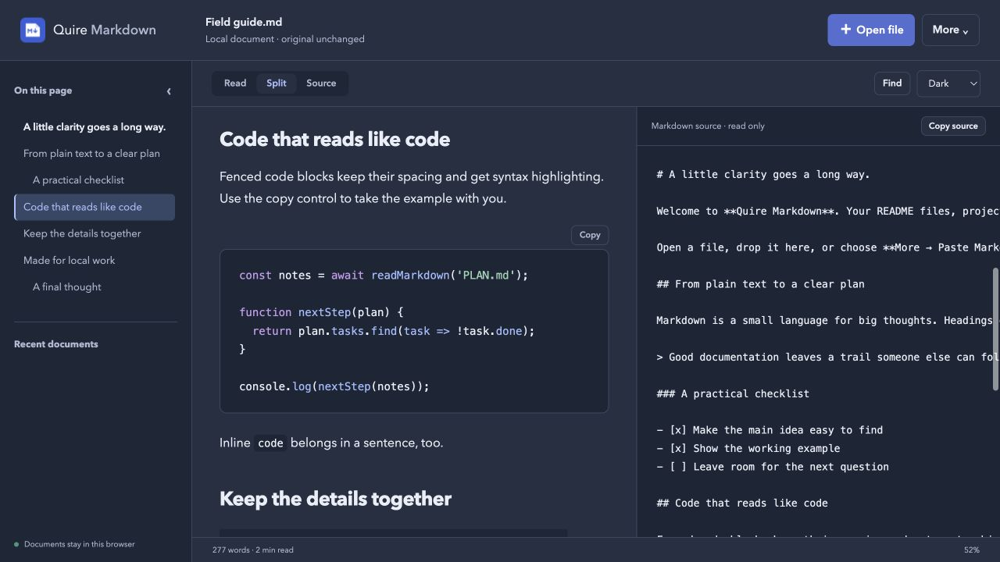

Give Markdown room to read.
A focused Chrome viewer for README files, technical notes and coding-agent plans. Open a document and get an outline, readable code and a little breathing room.
Free at launch. Installation will be available after Chrome Web Store review. No account required.

The useful parts, close at hand.
Built for reading the files you already have. No upload step and no workspace to set up.
- Navigate the document
- Jump through an outline, find a passage, or switch between the rendered page, Markdown source and a split view.
- Read the details
- Tables, task lists and strikethrough render in place. Fenced code uses bundled syntax highlighting with a copy control. Choose a light, dark or system theme.
- Keep up with a changing file
- Choose a local file, then refresh it or enable Follow file while the viewer tab is visible. Useful when an editor or coding agent is updating a plan alongside you.
- Carry a readable copy
- Print the rendered document or download an HTML copy. Reopen up to ten recent documents stored in this browser profile.

From plain text to a clear page.
- Open your MarkdownChoose a UTF-8 file, drop one into the viewer, or paste text. Documents can be up to 2 MB.
- Read it your wayUse the outline, find, code copy controls and source view. The original file stays untouched.
- Keep or remove the local copyRecent documents stay in this browser profile. Remove a copy from Recent when you no longer want it saved there.
A few things to know.
Does it send my documents anywhere?
Local documents are processed in your browser and are not sent to us. There are no accounts, analytics or tracking scripts. If you explicitly open a web URL, Quire requests access to that website and retrieves the file without cookies or a referrer. Read the privacy details.
Can I edit Markdown in it?
Quire Markdown is a viewer. It does not edit or overwrite original files. Edit in your preferred text editor and use Refresh or Follow file to see changes. Follow works for a file selected with Open file during the current viewer session; dropped files and recent copies are snapshots.
What stays out of the rendered page?
Images appear as blocked text references. Scripts, styles, forms and embedded content are removed. Diagrams and math are not rendered. Highlighting supports bundled common languages; unknown languages and large code blocks remain readable plain text.
Can I open Markdown from a website?
Yes, using a raw HTTP or HTTPS Markdown link after granting that origin access. Redirects are rejected. For a login-protected file or a redirecting link, download the file normally and open the local copy. The extension does not automatically replace every website you visit.